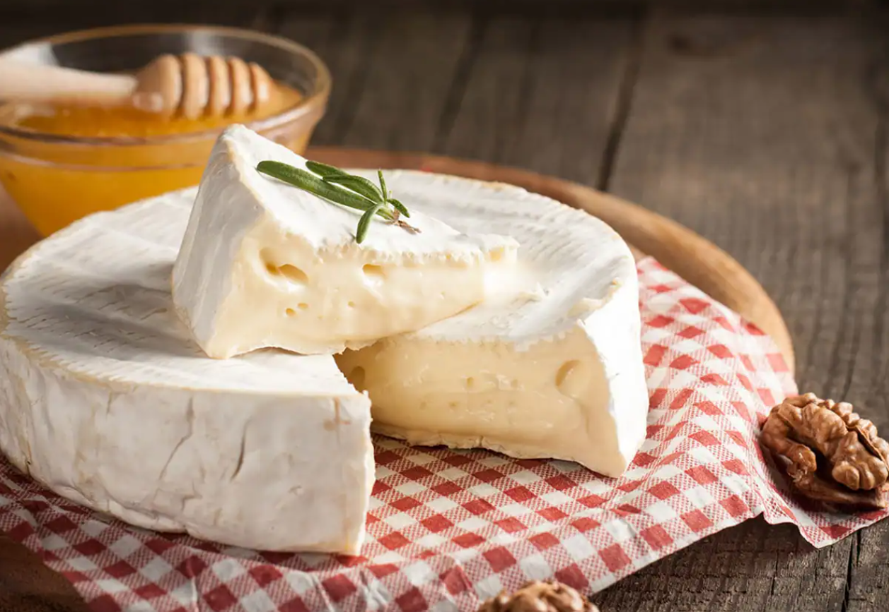
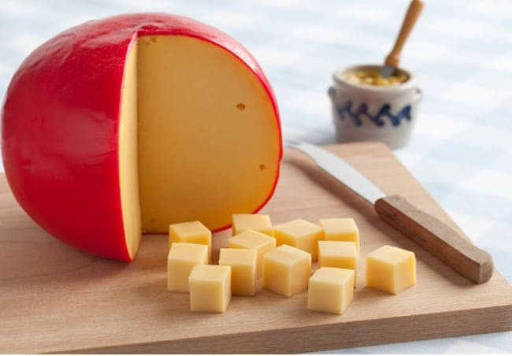
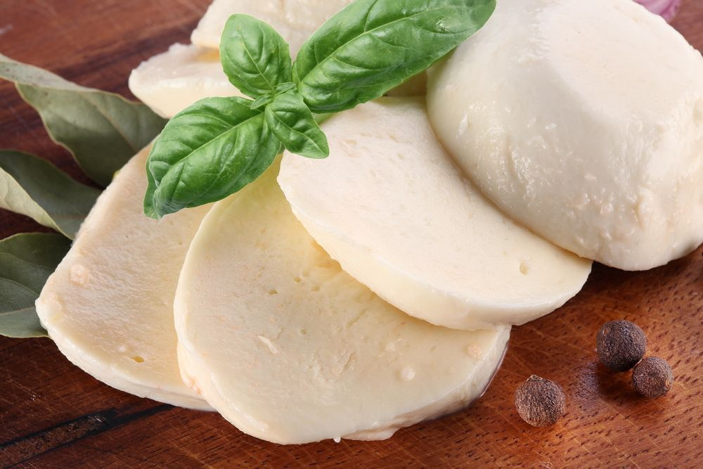
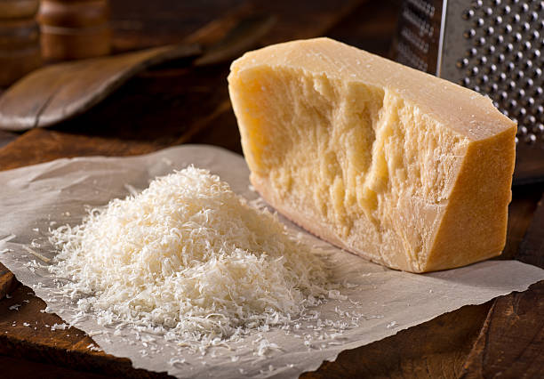
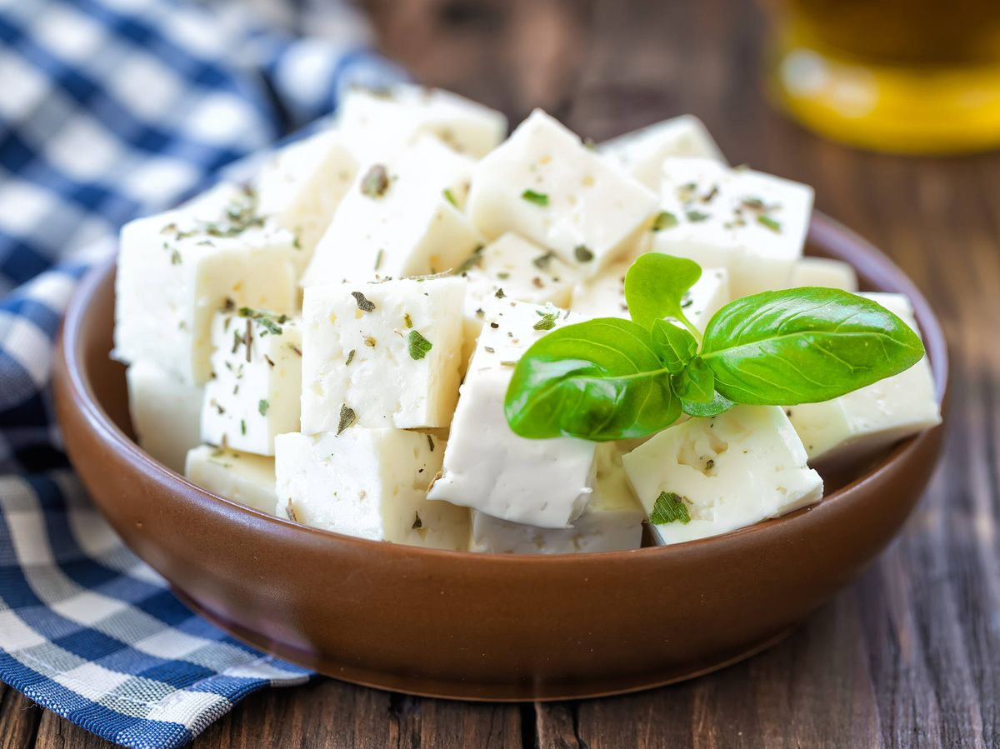
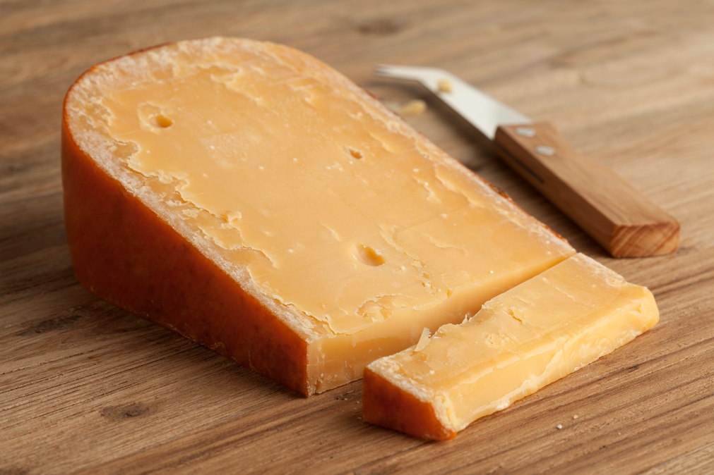
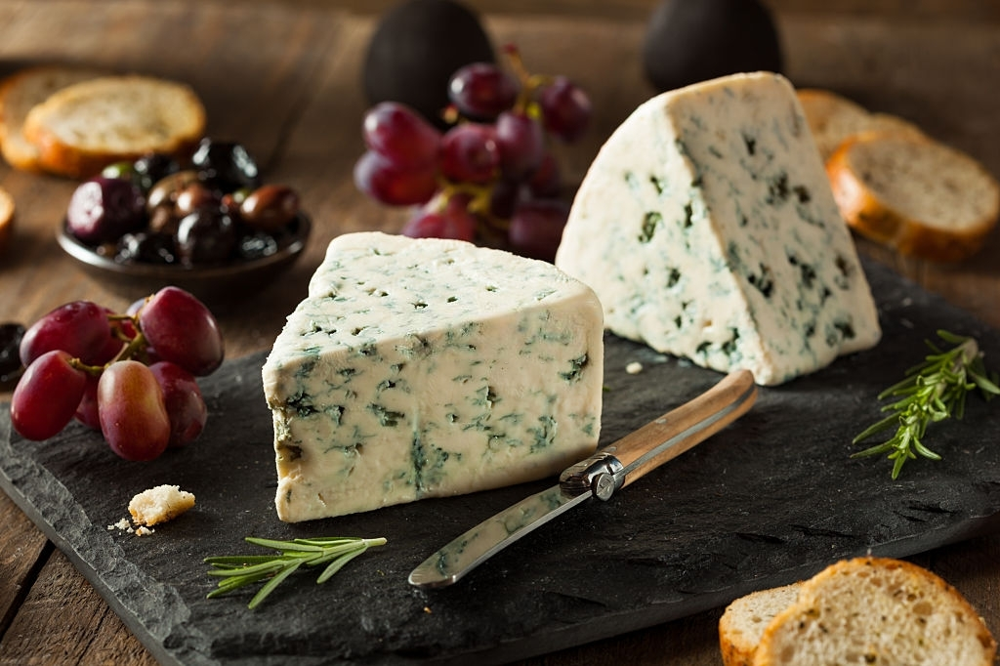

TIPOS DE QUESOS MÁS CONSUMIDOS
Queso Brie
Queso de vaca suave, cremoso, de sabor suave, y en toda Francia, es un queso de desayuno muy popular que se toma prácticamente a diario.
Se elabora con leche cruda de vaca, salvo en EE. UU. y Australia donde se usa leche pasteurizada. Está cubierto con una suave capa completamente comestible, formada por el moho (y a veces por otras bacterias) que aparece durante el periodo de curación. La pasta es de color pálido, marfil o amarillo claro. La textura es cremosa y el sabor delicado, aunque este va adquiriendo un sabor más fuerte conforme madura.
Se elabora en forma de rueda, pudiendo comercializarse entero o en cuñas triangulares. Puede tomarse como aperitivo o como postre, en tabla de quesos, en sándwich, y acompañado por pan. Marida bien con vino tinto.
Países donde más se consume queso brie:
- Grecia
- Francia
- Malta
Queso Edam
El suave sabor del queso edam te puede sorprender. Tiende a llevar un sabor a nuez o salado ligero, pero con poco sabor y poco olor. El queso edam es también un queso muy suave, debido a su bajo contenido de grasa. Este sabor suave se presta a que el queso edam maride muy bien con las frutas.
Es un queso neerlandés que se ha elaborado tradicionalmente en forma de bolas o esferas recubiertas de parafina de color rojo o amarillo. El nombre del queso proviene de la ciudad de Edam en la provincia de Holanda Septentrional. El Edammer recubierto de capa de cera negra suele estar curado cerca de 17 semanas. Este queso es muy popular en los países del Norte de Europa y en la Península de Yucatán en México.
Debido a su forma esférica se le suele llamar queso de bola.
Países donde más se consume queso edam:
- Países Bajos
- Alemania
- Francia
Queso Camembert

El queso Camembert de verdad está hecho con leche sin pasteurizar, y muchos países restringen la producción y venta de dichos productos.
El bueno de verdad tiene una característica única, ya que, cuanto más tiempo tiene, más suave se vuelve, hasta que, finalmente, tiene poco más que una corteza rellena de queso líquido.
El Camembert es popular en muchos alimentos europeos, pero la mayoría de los amantes de Camembert le dirá que la única forma real de disfrutar de su sabor sutil es servirlo a temperatura ambiente por encima de un poco de pan con una botella de vino de su elección. Es posible que desee probarlo con una selección de vino blanco.
Países donde más se consume queso camembert:
- Francia
- Islandia
- Italia
Queso Chédar

El Chédar un queso pálido de sabor agrio, originalmente producido en la ciudad británica de Cheddar, en el condado de Somerset, en Inglaterra.
Su sabor se va haciendo más intenso a medida que transcurre el tiempo de curación, etiquetándose los envases según el grado de maduración (de suave a fuerte, ácido, añejo o seco). Se usa leche de vaca que no está pasteurizada.
El queso chédar es el queso más popular en el Reino Unido y representa el 51% del mercado anual de queso del país, valorado en 1.900 millones de libras esterlinas
Países donde más se consume queso chédar:
- Reino Unido
- Estados Unidos
- Canadá
Queso Mozzarella
El queso mozzarella es un queso semi-suave, del sur de Italia elaborado tradicionalmente con leche de búfala italiana mediante el método de la pasta hilada, aunque internacionalmente está extendida la elaboración de quesos mozzarelle a base de leche de vaca.
La mozzarella fresca es generalmente blanca, pero cuando se sazona se torna de color amarillo claro dependiendo de la dieta del animal. Debido a su alto contenido de humedad, tradicionalmente se sirve al día siguiente de su elaboración, sin embargo, se puede mantener en salmuera hasta por una semana o más cuando se vende en paquetes sellados al vacío.
La mozzarella se usa para la mayoría de los tipos de pizza y varios platos de pasta o se sirve con rodajas de tomate y albahaca en la ensalada caprese.
Países donde más se consume queso mozzarella:
- Italia
- Francia
- Irlanda
Queso Roquefort

El queso roquefort presenta venas verdes que ofrecen un fuerte sabor, que en general se describe como leve, a continuación, dulce y después salado. Su sabor complejo hace que sea muy difícil de trabajar en cualquier tipo de bocadillo o sopa. Por suerte, no necesita nada de eso para condimentarlo.
Es un queso de pasta verde (fromage à pâte persillée) con un peso medio de 2,5 kg. Se elabora con leche de oveja de la raza Lacaune, la única capaz de adaptarse a las rigurosas condiciones climáticas que destacan por sus fuertes variaciones de temperatura.
El queso es originario de Francia y esta categorizado dentro de los quesos azules.
Países donde más se consume queso roquefort:
- Francia
- Italia
- Dinamarca
Queso Parmesano
El queso Parmesano es un famoso queso italiano de consistencia dura, granulosa y grasa. El parmesano se usa rallado o gratinado.
El queso fue creado en llanura Padana en la Edad Media, probablemente por monjes en el siglo XII o XIII. Rápidamente se hizo popular tanto en Italia como en otros países, y es uno de los primeros ejemplos italianos de un alimento con un nombre vinculado a una ciudad que alcanza un estatus icónico como especialidad.
Hoy en día, el parmesano es el queso italiano con denominación protegida más exportado. Entre el 20 y el 25% de la producción italiana se exporta siendo llamado el Rey de los quesos
y un alimento prácticamente perfecto
.
Países donde más se consume queso parmesano:
- Italia
- España
- Irlanda
Queso Feta
El queso Feta ofrece un sabor salado picante único, que va de leve a fuerte, dependiendo de la edad. Es muy facil cocinar con él, por lo que es una gran opción para los sándwiches a la parrilla, aunque la más importante de las recetas europeas para este queso es probablemente la ensalada griega.
Es un queso blando, sin corteza que se expende en porciones rectangulares o en forma de cuña. Su consistencia es sólida aunque flexible poseyendo algunas grietas y presentando en ocasiones pequeños huecos.
Este tipo de queso es muy tradicional y aparece descrito hace cientos de años, remontándose, por lo menos, a la Antigüedad clásica. La feta se elabora generalmente con leche de oveja, aunque pueden encontrarse variedades con leche de yegua.
Países donde más se consume queso feta:
- Grecia
- Italia
- Suiza
Queso Gouda
Queso de sabor dulce, a veces se describe con un sabor suave parecido a caramelo.
El queso se elabora a partir de leche de vaca pasteurizada (salvo cuando se siguen las recetas tradicionales, con leche cruda), procesada y recalentada hasta que los cuajos se separan del suero. Aproximadamente el diez por ciento de la mezcla son cuajos, los cuales son presionados dentro de moldes circulares durante 4 a 8 horas.
Es un queso semiduro de forma cilíndrica con la superficie lateral convexa, formando una curva suave que une la superficie plana superior con la inferior. La relación altura-diámetro varía de 1/4 a 1/3 y el peso va de 2.5 a 30 kg.
Países donde más se consume queso gouda:
- Países Bajos
- Alemania
- Italia
Queso Gorgonzola
Los quesos Gorgonzola, dependiendo de la edad, pueden ser crujientes, firmes, o quebradizos. O bien pueden ser de sabor leve o considerablemente salado. Puede variar hasta tal punto que es difícil generalizar aquí y recomendar tal o cual plato o vino, así que vamos a decir que debes mirar el veteado azul. Cuanto más azul, más fuerte. El Gorgonzola más leve es muy versátil y se puede usar en risotto, pizza o platos de pasta corta.
El gorgonzola es un queso italiano de mesa, de pasta cremosa y untuosa, hecho con leche entera pasteurizada de vaca que se presenta en dos variedades: dulce y picante.
La existencia de este queso se conoce desde la Edad Media, aunque solo fue en el siglo XI cuando comenzó a tener el aspecto enmohecido que posee en la actualidad.
Países donde más se consume queso gorgonzola:
- Italia
- Belgica
- Irlanda